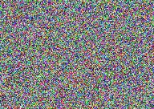
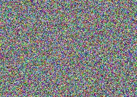
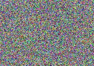

Texte de substitution : travaux de réhabilitation jusqu'à une date fictive.
Texte de substitution : mesures temporaires de circulation et de stationnement.
Texte de substitution : levée de fonds sous la halle de la ville fictive.

Texte de substitution : vote du public sur la page des réseaux sociaux.

Texte de substitution : le dossier de demande est disponible.

Accueil | Accessibilité | Plan du site | Mentions légales | Nous contacter
Site de test sans lien officiel avec une commune réelle — banc d'essai ACV.